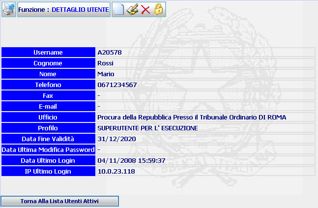
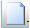
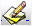
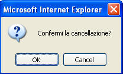
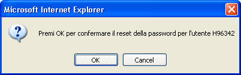
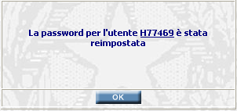
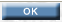

GENERALITA'
DETTAGLIO UTENTE: La funzione, consente di visualizzare i dati di dettaglio di un utente di sistema ed effettuare su di esso alcune operazioni.
LE MASCHERE VIDEO
La funzione in esame viene realizzata attraverso l'utilizzo della seguente maschera che riporta gli elementi descrittivi e operativi dei dati dell'utente:

COME FARE PER ...
| Per iscrivere un nuovo utente, l'amministratore deve: |
Cliccare sul pulsante

| Per modificare i dati inseriti relativi all' utente, l'amministratore deve: |
Cliccare sul pulsante

| Per cancellare l'utente e tutti i dati relativi l'amministratore deve: |
Cliccare sul pulsante ; verrà visualizzato il seguente messaggio:

a) Cliccando sul pulsante si annullerà l'operazione di cancellazione e si ritornerà alla pagina di dettaglio dell'utente.
b) Cliccando sul pulsante il sistema visualizzerà la maschera "Lista Utenti Attivi"
N.B. Con la cancellazione l'utente viene disabilitato all'utilizzo del sistema.
| Per effettuare il RESET della Password dell'utente l'amministratore deve: |
Cliccare sul pulsante ; verrà visualizzato il seguente messaggio:

a) Cliccando sul pulsante si annullerà l'operazione di cancellazione e si ritornerà alla pagina di dettaglio dell'utente.
b) Cliccando sul pulsante il sistema visualizzerà il messaggio:

Cliccando sul pulsante

il sistema visualizzerà la maschera "Lista Utenti Attivi"
N.B. La reimpostazione della Password consiste nel porre come Password il codice Utente corrispondente.
| Per visualizzerà la maschera "Lista Utenti Attivi" , l'amministratore deve cliccare su: |
CAMPI
Nella maschera non sono presenti campi digitabili.
PULSANTI
Oltre ai pulsanti , , , che fanno parte del gruppo di pulsanti di "Uso Comune" è presente il seguente pulsante:
|
PULSANTE |
DESCRIZIONE |
|
|
Questo pulsante ha lo scopo di reimpostazione della Password dell'utente. |
BOTTONI
Oltre ai comandi funzionali relativi al menù verticale sono presenti i seguenti comandi:
|
COMANDI |
DESCRIZIONE |
|
|
A fronte di tale comando il sistema visualizza la maschera "Lista Utenti Attivi". |